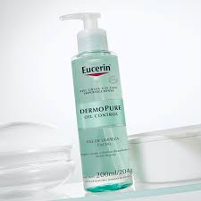
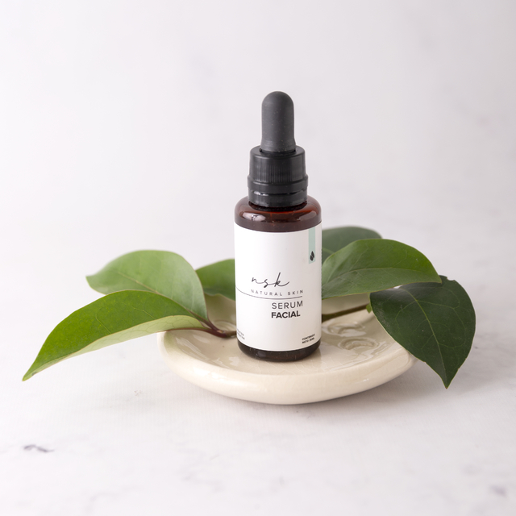
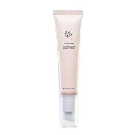
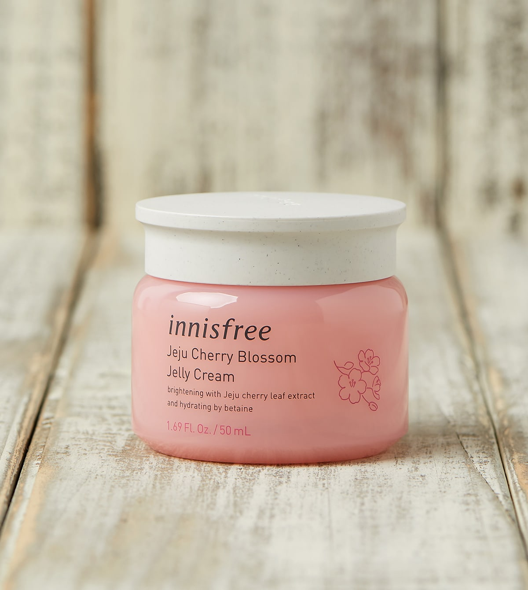
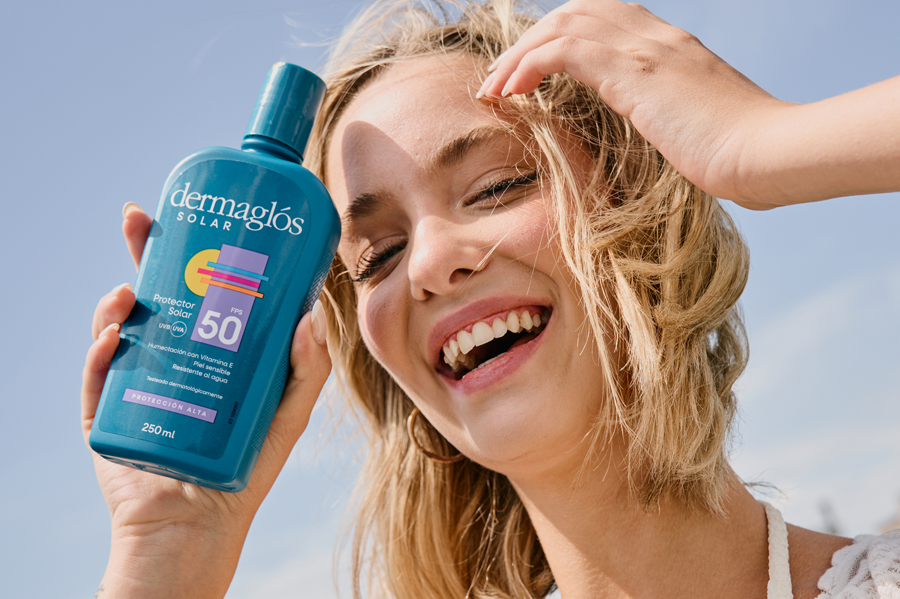

Productos recomendados
Aceite limpiador

🌿🛁 El limpiador en aceite es un producto suave pero efectivo que disuelve el maquillaje, el exceso de grasa y las impurezas sin resecar la piel. Perfecto para todo tipo de piel, dejándola limpia, suave y nutrida..
Limpiador en gel
💧🧼 El limpiador en gel es ideal para pieles grasas o mixtas, ya que elimina el exceso de sebo y las impurezas sin dejar residuos. Proporciona una limpieza profunda sin resecar la piel, dejándola fresca y equilibrada.
Sérum
✨💧 El serum es un concentrado de ingredientes activos diseñado para tratar problemas específicos de la piel, como arrugas, manchas o falta de luminosidad. Su textura ligera permite una rápida absorción, brindando resultados visibles en poco tiempo.
Crema contorno de ojos:
👁️🌟 La crema contorno de ojos es una fórmula especializada para la delicada piel alrededor de los ojos. Ayuda a reducir ojeras, bolsas y arrugas, proporcionando hidratación y firmeza para una mirada radiante y rejuvenecida.
Aceite limpiador
🌺💦 La crema hidratante es esencial para mantener la piel suave, flexible y protegida de la sequedad. Formulada con ingredientes humectantes, restaura el equilibrio de hidratación de la piel, dejándola nutrida y luminosa.
Protector solar
☀️🛡️ El protector solar es indispensable para proteger la piel de los dañinos rayos UV, previniendo quemaduras, manchas y el envejecimiento prematuro. Debe aplicarse diariamente, incluso en días nublados, para mantener la piel sana y protegida.